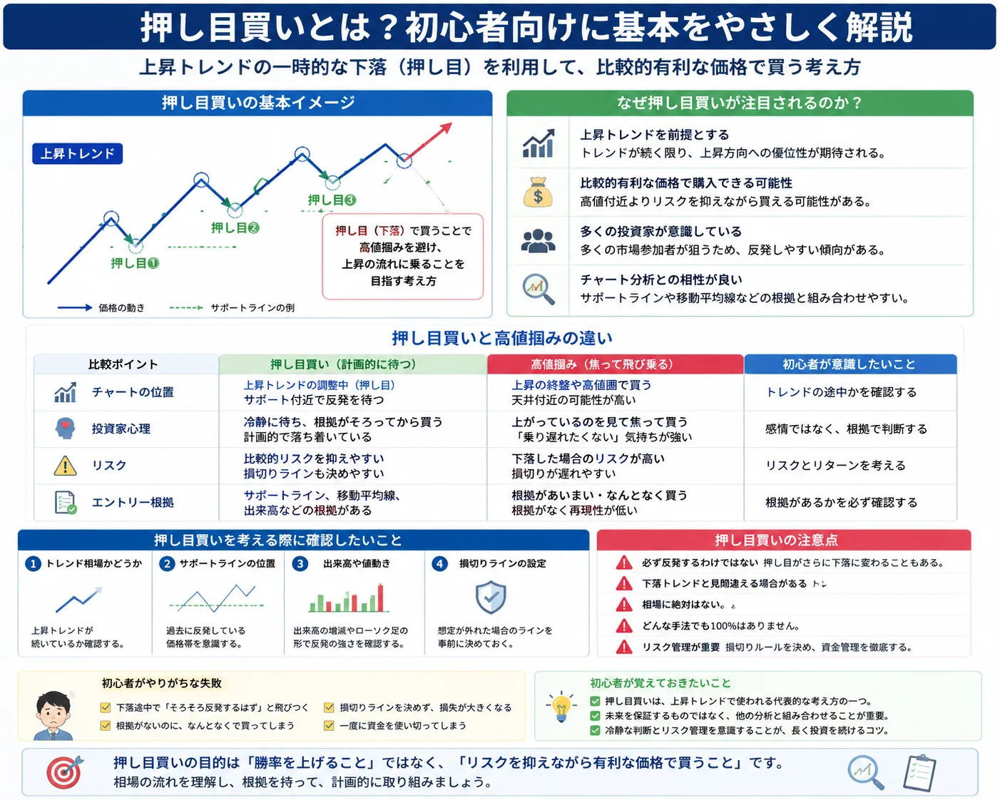

押し目買いとは？
投資手法 / チャート分析の基礎
押し目買いとは？
投資初心者は「いつ買えば良いのか」で悩みやすいものです。上昇相場の途中では、価格が一直線に上がるのではなく、一時的に下落する場面があります。その一時的な下落を利用して買いを考える方法が、押し目買いです。まずは利益を保証する手法としてではなく、相場参加者が意識しやすい考え方として基本を理解していきましょう。
押し目買いは「下がったから必ず買う」ではありません。上昇トレンドが続いているのか、リスクをどこで切るのかまでセットで考えることが大切です。
Basic
押し目買いとは？

押し目買いとは、上昇トレンド中に価格が一時的に下がった場面で、買いを検討する考え方です。株式投資でもFXでもよく使われる言葉で、「上がっている途中で少し安くなったところを狙う」というイメージです。
ただし、価格が下がった場面なら何でも押し目買いになるわけではありません。前提として、相場全体が上昇方向にあるのかを確認する必要があります。高値を追いかけて焦って買うのを避けるための考え方の一つとして理解すると、初心者にもイメージしやすくなります。
H3
押し目とは何か？
押し目とは、上昇している価格が一時的に下がる場面のことです。買いの勢いが弱まったり、利益確定売りが出たりして、短期的に価格が調整することがあります。
H3
押し目買いの基本イメージ
価格が上昇し、少し下がり、再び上がる可能性を考えて買いを検討する流れです。チャート上では、上昇の途中にできる小さな下落や調整を確認するイメージになります。
Why
なぜ押し目買いが注目されるのか？
上昇トレンドを前提にできる
押し目買いは、基本的に上昇トレンドが続いている場面で考えます。相場の方向性を意識しながらエントリーを検討しやすい点があります。
比較的有利な価格を考えやすい
高値を追いかけるのではなく、一時的に下がった場面を待つため、購入価格を落ち着いて考えやすくなります。
多くの投資家が意識しやすい
サポートラインや移動平均線など、チャート分析と組み合わせやすいため、相場参加者が注目しやすい場面になります。
トレンドの考え方は、トレンド相場とレンジ相場の違いとは？でも整理しています。押し目買いを考える前に、現在の相場が上昇トレンドなのか、レンジなのか、下落トレンドなのかを確認することが大切です。
Compare
押し目買いと高値掴みの違い
※ スマホでは表を横にスクロールできます。
| 項目 | 焦って飛び乗るケース | 計画的に待つケース |
|---|---|---|
| 買う理由 | 上がっているから置いていかれたくない | 事前に考えた価格帯まで待つ |
| 心理状態 | 焦り・期待・不安が強い | 条件を確認してから判断する |
| リスク管理 | 損切り位置が曖昧になりやすい | 損切りラインを先に決めやすい |
| 注意点 | 高値掴みになりやすい | 待ちすぎて機会を逃すこともある |
焦って飛び乗るケース
価格が急に上がると「今買わないと間に合わない」と感じやすくなります。この心理で買うと、根拠より感情が先に出やすくなります。
計画的に待つケース
押し目買いでは、どの価格帯まで待つのか、どこを割ったら見送るのかを事前に考えます。待つこと自体も判断の一部です。
初心者が意識したいポイント
「安くなったから買う」ではなく、「上昇トレンドの中の調整なのか」を見ることが重要です。投資家心理の違いも結果に影響します。
Check
押し目買いを考える際に確認したいこと
トレンド相場かどうか
押し目買いは上昇トレンドを前提に考えるため、相場が本当に上向きなのかを確認します。高値と安値が切り上がっているか、移動平均線の向きはどうかなどを見ます。
サポートラインの位置
価格が下がったときに、過去に反発しやすかった価格帯や支持線付近で止まるかを確認します。詳しくはサポートラインとレジスタンスラインとは？で整理しています。
出来高や値動き
株式では出来高、FXでは値動きの勢いや時間帯なども判断材料になります。急落している途中なのか、下げ止まりの兆しがあるのかを冷静に見ます。
損切りラインの設定
押し目だと思っても、そのまま下落トレンドに変わることがあります。どの価格を下回ったら考えを見直すのかを事前に決めておくことが重要です。
Caution
押し目買いの注意点
- 一時的な下落に見えても、必ず反発するわけではありません。
- 押し目だと思った場面が、実際には下落トレンドの始まりである場合もあります。
- 相場に絶対はないため、チャートの形だけで未来を決めつけないことが大切です。
- 損切りライン、資金配分、取引量を含めたリスク管理が必要です。
チャートパターンを確認する場合は、ダブルトップとダブルボトムとは？も参考になります。ただし、どの分析も単独で未来を保証するものではありません。
Mistake
初心者がやりがちな失敗
下落途中で飛びつく
少し下がっただけで「押し目だ」と決めつけると、下落の途中で買ってしまうことがあります。
根拠なく買う
サポートラインやトレンド確認なしに、感覚だけで買うと判断がぶれやすくなります。
損切りを決めない
想定と違う動きになったときの出口を決めていないと、損失が大きくなる可能性があります。
一度に資金を使い切る
押し目だと思って全額を使うと、さらに下がったときに対応しにくくなります。資金配分も大切です。
Mindset
初心者が覚えておきたいこと
-
押し目買いは考え方の一つ
投資やFXで使われる代表的な考え方ですが、万能な手法ではありません。
-
未来を保証するものではない
押し目に見えても、そのまま下がることがあります。予測よりも準備を重視しましょう。
-
他の分析と組み合わせる
トレンド、ライン、チャートパターン、資金管理などを組み合わせて判断材料を増やします。
-
冷静な判断とリスク管理を意識する
エントリー前にルールを決めておくと、感情的な売買を減らしやすくなります。
ルール化については、投資ルールを決める重要性とは？、損失管理については損切りとは？判断方法の例を解説でも確認できます。
Summary
まとめ
押し目買いは、上昇トレンドで使われる代表的な考え方です。価格が一時的に下がった場面を利用し、比較的有利な価格で買うことを目指します。
ただし、必ず成功する手法ではありません。押し目に見えても下落が続くことはあります。初心者は、相場状況の確認、損切りライン、資金管理をセットで考えることが大切です。
Related
あわせて読みたい関連記事
よくある質問
-
Q. 押し目買いとは何ですか？
上昇トレンド中に一時的に価格が下がった場面で、買いを検討する考え方です。 -
Q. 押し目買いは初心者でも使えますか？
考え方を学ぶことはできます。ただし、トレンド確認や損切りラインの設定など、リスク管理とセットで考える必要があります。 -
Q. 押し目と下落の違いはどう判断しますか？
完全に判断する方法はありません。上昇トレンドが続いているか、サポートライン付近で反応しているか、値動きに変化があるかを複数の材料で確認します。 -
Q. 押し目買いは必ず利益が出ますか？
いいえ。押し目買いは利益を保証する手法ではありません。想定と違う場合に備えて、損切りや資金管理を考えておくことが大切です。
ご利用にあたっての注意事項
本記事は情報提供を目的としており、投資の勧誘や売買判断の推奨を目的としたものではありません。株式・投資信託・外国為替証拠金取引等は元本保証がなく、相場変動等により損失が生じる場合があります。取引開始前に、契約締結前交付書面や商品説明書等を必ずご確認のうえ、ご自身の判断と責任でお取引ください。